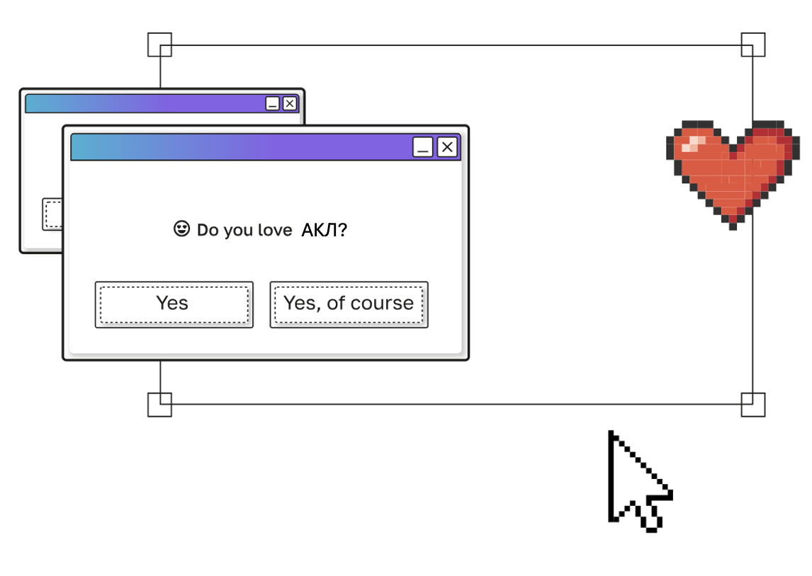
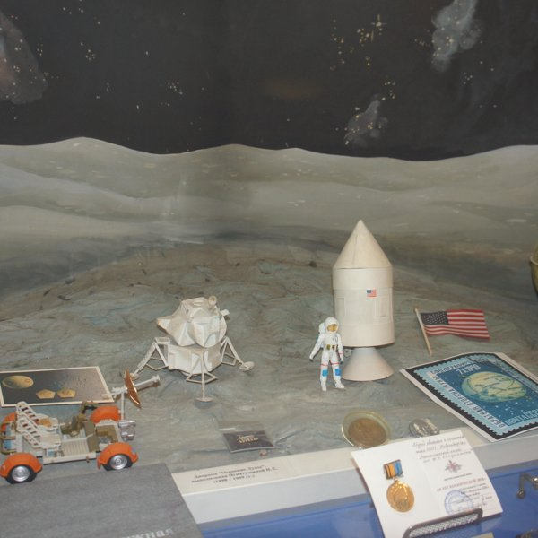

Аэрокосмический лицей имени Ю.В.Кондратюка
+7 383 279 21 23
Новосибирская обл., г. Новосибирск
IT'S MORE THAN SCHOOL

больше чем школа
➜ Возможность получить углубленные знания по профильным предметам, развить интеллект и критическое мышление
➜ Глубокое погружение в предмет: Углубленное изучение физики, математики, информатики, что критически важно для технических вузов.
➜ Ранняя профориентация: Уже со средних классов ученики определяются с направлением, готовятся к поступлению в профильные вузы, получают представление о космической и авиационной индустрии.
➜ Практические навыки: Участие в кружках и проектах, как, например, создание моделей самолётов, дает реальные инженерные навыки, которые редко встречаются в обычных школах.
➜ Высокий уровень образования: Престиж лицея и сильные преподаватели обеспечивают качественную подготовку, превосходящую стандартную школьную программу.
➜ Сильное окружение: Попадание в сообщество единомышленников с общими интересами, что образует взаимопомощь и командный дух, создавая уникальную социальную среду.


ОБРАЗОВАНИЕ
Участие в конференциях по разным предметам (физика, математика, русский, информатика)
Углубленное изучение физики и математики, подготовка к олимпиадам
Ученик может записаться на дополнительные уроки - спецкурсы (авиамоделирование, экспериментальная физика и другие)
Спецкласс - класс с углубленным изучением физики и математики, но также и остальных предметов, обязательны 3 спецкурса
МЕРОПРИЯТИЯ
Летняя аэрокосмическая школа (ЛАШ) проводится с 25 по 30 августа, ученики учавствуют в различных соревнованиях и динамичных мероприятиях, получая колоссальное количество эмоций.
Зимний бал проводится 25 декабря, мальчики приходят в красивых костюмах, а девочки в платьях. Перед балом проводятся веселые интерактивные игры.